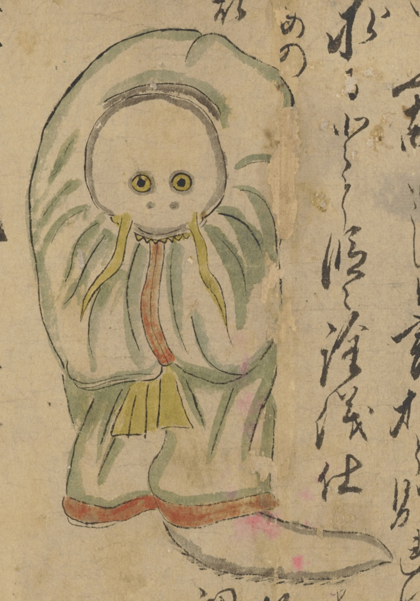

鯰；ナマズ，魚；サカナ，僧；ソウ，越後；エチゴ

僧侶に化けた鯰。黄色い髭と牙が生えている。法衣を着ている。尻尾が生えている。
著作者：長岡多門／出典：親書誌：U426_nichibunken_0448：諸国妖怪図巻／日付：2019／資源識別子：U426_nichibunken_0448_0001_0001
Copyright (c)2010- International Research Center for Japanese Studies, Kyoto, Japan. All rights reserved.